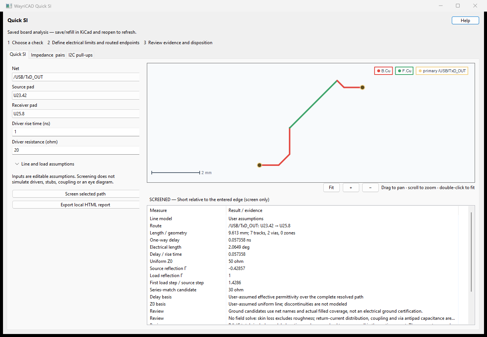
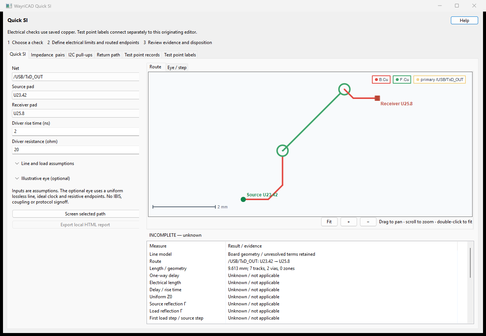
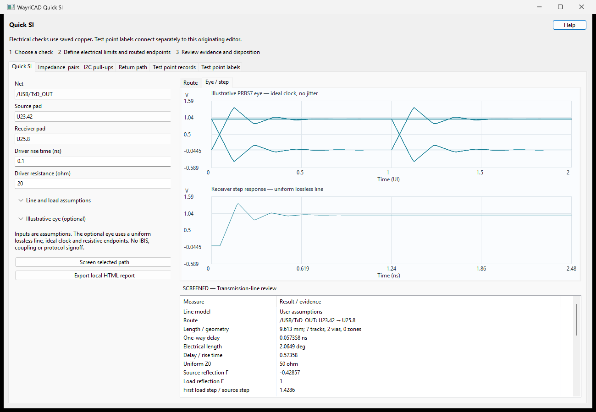
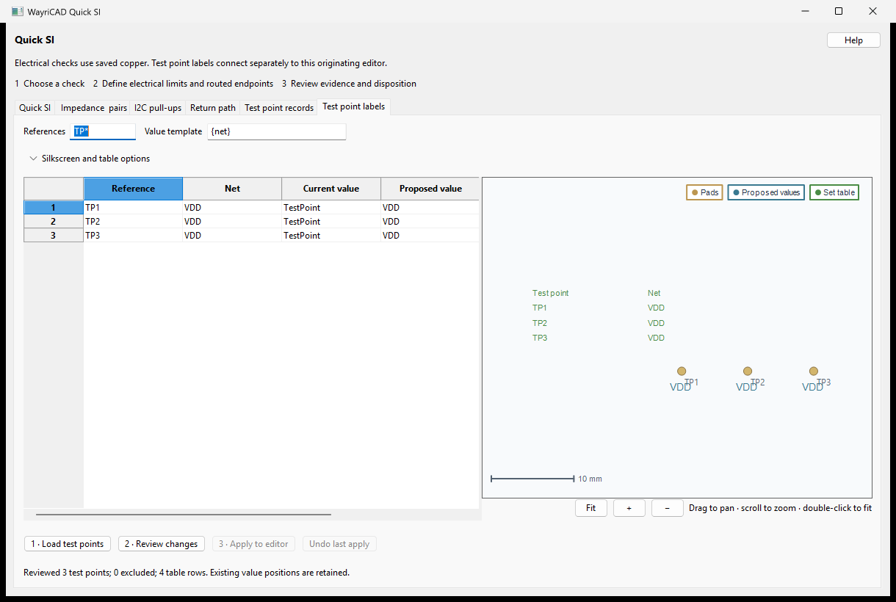
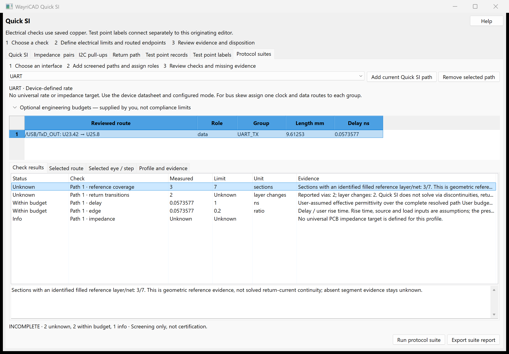

Measure a routed source-to-receiver path, screen delay and resistive termination, and export local evidence. This upgrades the existing Signal Integrity Advisor package; no second SI plugin is needed.
U1.1 and J1.1.
This Marble route is 9.612525 mm with 7 tracks and 2 vias. The screenshot assumes 50 ohm Z0, effective Er 3.2, 1 ns rise time, 20 ohm source and open load: 57.3577 ps delay and a 30 ohm series-match candidate. These are conditional screening values, not USB compliance results.
| Quantity | Definition / caution |
|---|---|
| Delay | Complete modeled delay, or length × sqrt(effective Er) / c under an explicit assumption. Partial RLC delay is not used as a complete total. |
| Electrical length | 360 × frequency × delay. Frequency is not assumed to be the data rate. |
| Edge screening | Request transmission-line review when delay is at least one sixth of the entered rise time. A short-path result is not signoff. |
| Reflection Γ | (R − Z0) / (R + Z0), ideal resistive endpoint model. Open load +1, short −1. |
| First arrival | Z0 / (Rsource + Z0) × (1 + Γload). First lossless load step, not peak overshoot or an eye diagram. |
| Series candidate | Z0 − Rsource when nonnegative. Review topology and device limits before choosing termination. |
SCREENED is not PASS. INCOMPLETE retains unresolved line terms; UNRESOLVED has no usable endpoint path. Explicit assumptions never establish connectivity. Vias, reference transitions, multi-terminal branches and zone corridors require further review. Reports list structured blocker codes and the next action for each missing input or unsupported model.

Without explicit line assumptions, this route's unresolved total delay and uniform Z0 remain unknown.
Expand Illustrative eye (optional), enable the model, enter the NRZ bit rate and open-circuit source swing, then screen the path. The Eye / step tab and exported HTML show the receiver PRBS7 eye and step response.

This capture uses the same Marble path with assumed 50 ohm Z0, effective Er 3.2, a 100 ps rise time, 1 Gbps bit rate, 1 V open-circuit source swing, 20 ohm source and open receiver. It is not a USB compliance result.
The model uses a uniform lossless line, resistive endpoints and equal linear rise/fall ramps; rise time is 10–90%. Periodic PRBS7 includes settled history. The ideal clock is aligned to first arrival. Center opening is minimum high minus maximum low at 0.5 UI, not optimized eye height. Negative opening indicates overlap at that phase. The 64 samples/UI can miss narrow peaks.
No IBIS nonlinear drivers, receiver capacitance, coupling, via discontinuities, noise, jitter, clock recovery, eye masks or BER are simulated. Vias can contribute to route delay estimates but their discontinuities are not modeled. Unknown delay/Z0, zones and extra terminals make a routed eye unavailable. Excessive or non-decaying reflections produce an error.
wayricad-si eye --z0-ohm 50 --delay-ns 0.4 --source-ohm 20 --rise-ns 0.1 --bitrate-mbps 1000 --swing-v 1 --html eye.html --output eye.json
The standalone eye command needs ordinary Python only. For a board path add --eye-bitrate-mbps 1000 --eye-swing-v 1 to screen. An explicitly requested unavailable routed eye returns exit code 3. Source matching can be compared by changing resistance and rerunning; input changes clear old plots.
Model basis: TI AN-807: Reflections—Computations and Waveforms. Successive receiver arrivals follow the product of the source and load reflection coefficients; the report preserves all assumptions.
wayricad-si inspect board.kicad_pcb --net "/USB/TxD_OUT" wayricad-si screen board.kicad_pcb --net "/USB/TxD_OUT" --start U23.42 --end U25.8 --rise-ns 1 --source-ohm 20 --z0-ohm 50 --epsilon-eff 3.2 --output quick-si.json --html quick-si.html
From source use python -m signal_integrity_advisor_plugin.cli. Ordinary Python hands analysis to the compatible installed KiCad runtime. Initial dependency setup may require internet; calculations and reports are local. Omit Z0/Er options to retain automatic unknowns. Use --load-ohm 50 for a resistive load. Exit codes: 0 inventory/screened, 1 error, 2 unresolved, 3 incomplete. Code 0 is not electrical approval.
Impedance & pairs provides editable targets and route/skew review. It does not infer coupled differential impedance by adding two single-ended values. I2C pull-ups checks the range from (VDD − VOL) / IOL and tr / (0.8473 × Cbus).
For unresolved routing check exact pad labels, physical continuity and filled zones. For unknown line estimates check continuous adjacent return-plane coverage and the saved Board Setup stackup. Automatic Z0 requires physical dielectric thickness and Er; missing values remain unknown and are never replaced by generic FR-4 dimensions. Follow the report's blocker actions rather than entering a number merely to obtain a result. A saved snapshot needs save/refill and reopen after board changes. Changing a form input clears its prior report.
No full-wave, IBIS-based eye, crosstalk, receiver-capacitance or coupled-line simulation is claimed. Zone corridors are not full plane solutions; effective Er differs from bulk laminate Er. The tool never edits copper.
References: TI High-Speed DSP Systems Design; TI termination discussion; NXP I2C specification. See the packaged README for complete commands and validation.
Quick SI now includes the full Return path and Test point records tabs, including descriptor/fixture exports. Return-path reference · Test-point record reference.

Locked, unconnected and multiple-net footprints are excluded. Saved-board standalone previews cannot apply. PCB value edits do not change schematic values and may be overwritten by a later schematic update.
Choose among 33 profiles for I2C, SPI, UART, CAN, I2S/TDM, parallel GPIO, SDIO, USB, LVDS, SerDes, PCI/PCIe, DDR, Ethernet and M.2 PCIe/SATA. M.2 alone does not identify an electrical interface. Profile rates and nominal targets are reference information, not compliance limits.

WITHIN_BUDGET applies only to evaluated quantities. REVIEW marks exceeded budgets or mismatched illustrative eye rate. INCOMPLETE retains missing evidence; BLOCKED identifies unusable input, duplicates, different saved revisions or unspecified M.2 interface. Vias/reference transitions are not solved. Independent single-ended routes cannot establish differential impedance, crosstalk or protocol certification.
wayricad-si profiles wayricad-si screen board.kicad_pcb --net DATA_P --start U1.1 --end U2.1 --role P --group lane0 --output p.json wayricad-si suite --profile uart --reports route.json --max-delay-ns 1 --html suite.html --output suite.json
The 1 ns budget above is an arbitrary example, not a UART requirement. For pairs add independently screened P and N reports to --reports and choose the actual pair profile. profiles/suite work with ordinary Python, offline. Suite exit codes: 0 within budget, 1 error, 2 blocked, 3 review/incomplete. At most 64 route reports, 16 MiB each. Saved-board changes require reopening and fresh screens; the CLI compares recorded revision hashes but does not reopen their source boards.